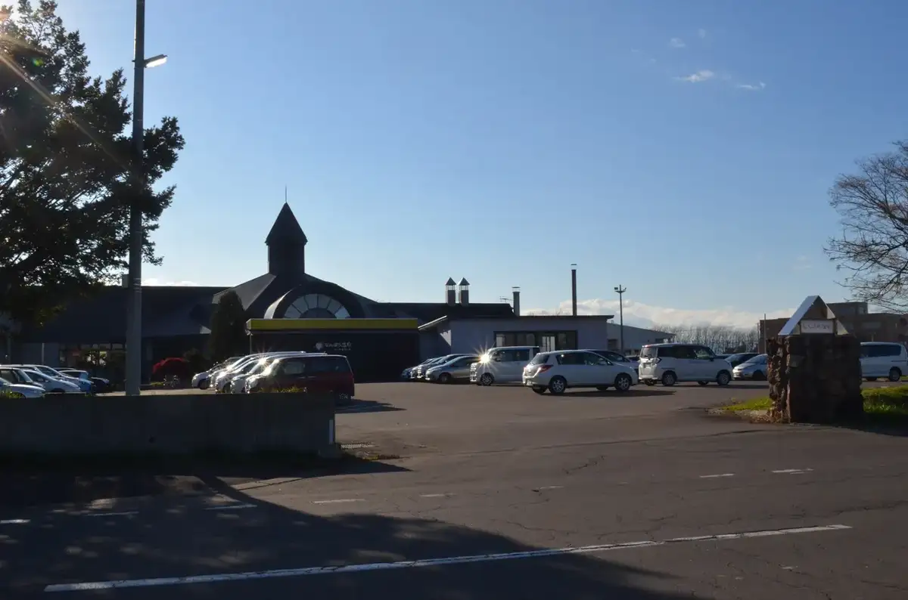
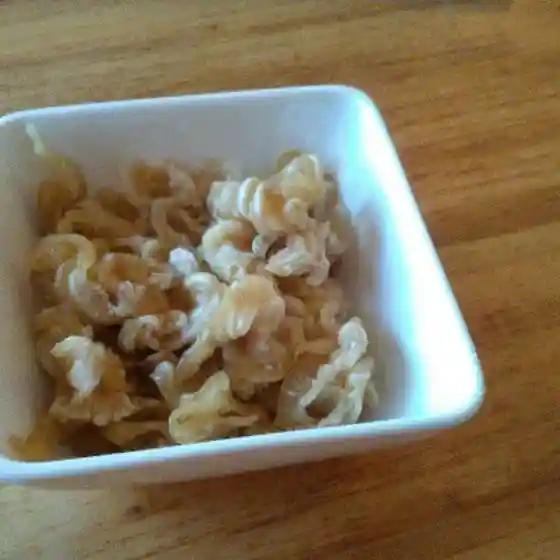
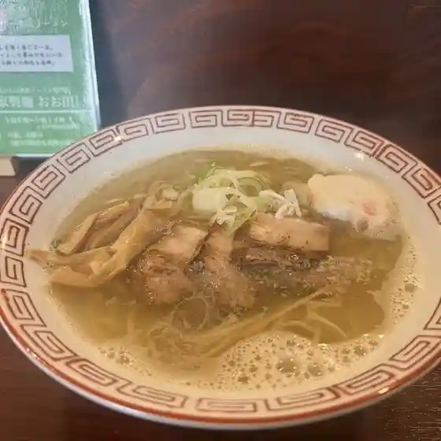
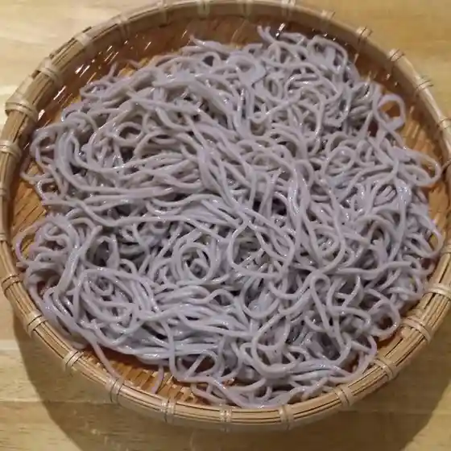
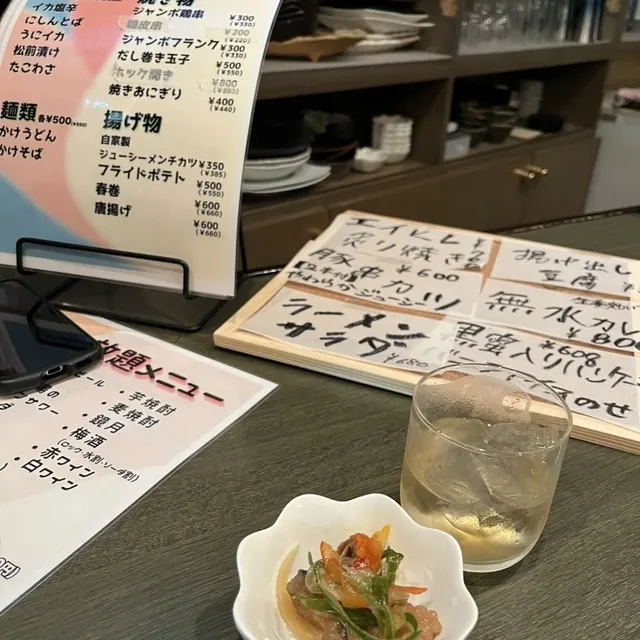
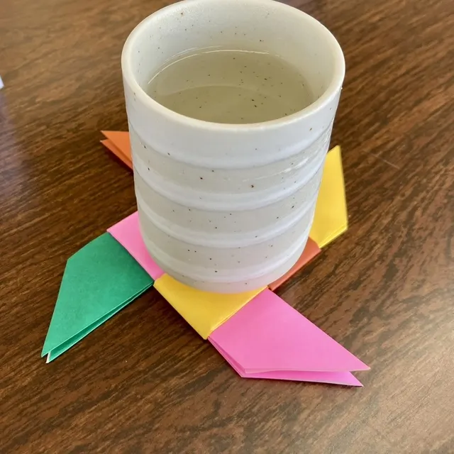
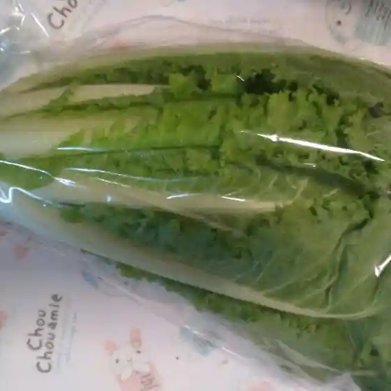
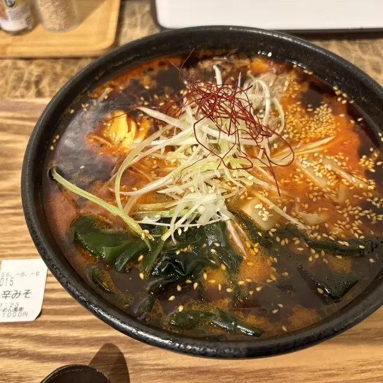
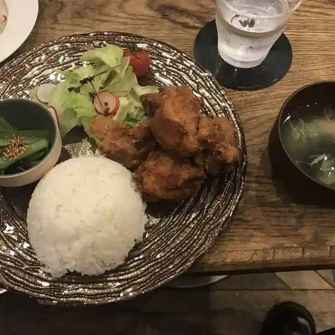

Nanporo
Nanporo · Hokkaido
Nanporo
Highlighted on the Hokkaido map.

Stay
なんぽろ温泉ハート＆ハート(南幌温泉)
Nanporo Onsen Haato & Haato ( Nanporo Onsen )
Dining
よんなーよんなー

Yonnaayonnaa
自家製麺 おお田

Jikasei Men Oo Ta
サッポロ麺匠

Sapporo Men Takumi
主税 別邸

Chikara Bettei
天狗屋

Tengu Ya
野菜直売所 みのり

Yasai Chokubai Tokoro Minori
風樹

Fuuju
喫茶マンマ

Kissa Manma
楓
Momiji
ベジパンナ
Bejipanna
うどんや 昆布さん。
Udonya Konbu San .
サウストップ
Sausutoppu
ダイヤモンドカフェ
Daiyamondokafe
喫茶バナナ
Kissa Banana
A・COOP なんぽろ店
A Coop Nanporo Mise
セイコーマート 南幌栄町店
Seikoomaato Nanporo Sakaemachi Mise
ぼのぼの
Bonobono
Chaco
Chaco
あいくるふれあいコーナー
Aikurufureai Koonaa
ハントヴェルク
Hantoveruku
gru
Gru
株式会社 北洋食産
Kabushikigaisha Hokuyou Shoku San
ラッキーマート 南幌店
Rakkiimaato Nanporo Mise
ぽろカフェ
Poro Kafe